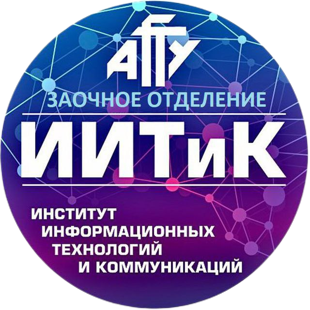

Резюме фронтенд разработчика Данила Очирова

Очиров Данил
Intern фронтенд-разработчик, Астрахань
Как разработчик, обладающий творческим мышлением и аналитическими навыками, я нашел, что фронтенд-разработка — это идеальная область для реализации моего потенциала. Я стремлюсь создавать интуитивно понятные и доступные пользовательские интерфейсы, используя новейшие технологии. С интересом изучаю современные направления в веб-разработке.
Навыки
Пишу валидную семантическую разметку, знаю базовые правила доступного интерфейса, умею валидировать формы.
Cтрою flex и grid сетки, оптимизирую работу с помощью кастомных свойств и переменных, умею строить адаптивные резиновые интерфейсы, использую простые анимации в проектах.
Пишу на ванильном JS в функциональном стиле, понимаю классический ООП стиль и особенности JavaScript ООП, следую принципу DRY. Понимаю ассинхронное программирование (Callback, Event Loop, Promise, Microtasks), умею работать с асинхронными операциями (Fetch API) и обрабатывать ошибки.
Создаю SPA, многостраничные SPA при помощи React. Умею работать с базовыми концепциями React, различными методами стилизации компонентов. А также использую и более продвинутые концепции: Context API, Redux, Custom Hooks, Routing.
Умею работать с системой контроля версий GIT, знаю основные команды по работе с репозиторием, как работать в ветках и форках.
Умею делить интерфейс на переиспользуемые и независимые компоненты.
Создал и улучшал с ростом потребностей свою удобную сборку для автоматизации задач «Gulp». Также имею маленький опыт работы с банделерами: «Parcel» и «Webpack».
Образование
-  ФГБОУ ВО «АГТУ»
-
В настоящее время я обучаюсь на высшей заочной коммерческой форме обучения по специальности «Программная инженерия». Это уникальная возможность, которая позволяет мне совмещать учебу с практической деятельностью. Заочное обучение дает мне гибкость в управлении своим временем, что позволяет мне изучать программирование в комфортной обстановке дома.
- ФСПО ФГБОУ ВО «АГТУ»
-
Я успешно завершил среднее профессиональное образование на очной бюджетной форме обучения по специальности «Прикладная информатика (по отраслям)». В ходе обучения я получил квалификацию «Техник-программист», что стало важным шагом на пути к моей карьере в сфере информационных технологий.
Проекты
Есть еще множество на мой взгляд менее значимых проектов, где я практиковался релизовывать различные элементы интерфейса, можете ознакомиться с ними в репозиториях моего Github аккаунта.
Дополнительно
Сайд-скиллы
Testing/Debugging
Владею навыками ручного тестирования и отладки кода, что позволяет мне обеспечивать корректную работу приложений. Умею выявлять проблемы и предлагать решения, что способствует улучшению качества разрабатываемого программного обеспечения.
Web Accessibility (a11y)
Обладаю базовым пониманием принципов доступности веб-контента (a11y), что позволяет мне создавать более инклюзивные и удобные для пользователей интерфейсы. Знаю основные рекомендации и стандарты, такие как WCAG, и стремлюсь применять их в своей работе.
UI/UX Design
Обладаю базовым пониманием основ дизайна пользовательского интерфейса (UI) и пользовательского опыта (UX). Знаю ключевые принципы, которые помогают создавать интуитивно понятные и привлекательные интерфейсы, ориентированные на потребности пользователей.
SEO
Имею представление о принципах поисковой оптимизации (SEO) и понимаю, как они влияют на видимость сайтов в поисковых системах. Знаю основные методы, включая оптимизацию метатегов, контента и структуры сайта для повышения его ранжирования.
Email-рассылки
Обладаю навыками верстки email-рассылок, что позволяет создавать привлекательные и функциональные шаблоны для рассылок.
SVG-графика
Обладаю базовым пониманием структуры SVG-графики и умею вносить изменения по мере необходимости. В своих проектах активно использую SVG-спрайты для оптимизации загрузки и улучшения производительности.
Visual Studio Code
Внедрил собственные сниппеты в Visual Studio Code, что значительно улучшило мою продуктивность. По мере необходимости добавляю новые. Эти сниппеты позволяют мне быстро вставлять часто используемые элементы кода, что экономит время и упрощает процесс разработки.
Английский язык
Мой уровень английского языка — Intermediate. Я способен читать техническую документацию и смотреть некоторые обучающие видео на английском. Это полезный навык в проектах, особенно когда информацию на русском языке найти не удается.
Софт-скиллы
Обучаемость
Успешно освоил профессию фронтенд-разработчика за короткий срок, самостоятельно изучая современные технологии и инструменты. Мой подход к обучению включал практическое применение знаний через самостоятельную реализацию проектов, что позволило мне быстро развить навыки и уверенность в разработке пользовательских интерфейсов.
Самостоятельность и ответственность
Обладаю высокой степенью самостоятельности и ответственности. Прежде чем обратиться за помощью, всегда стараюсь самостоятельно найти ответ на возникшие вопросы. Если задача не решается, активно ищу альтернативные пути и решения.
Аналитическое мышление
Обладаю аналитическим мышлением и всегда стараюсь рассмотреть различные варианты решения задачи, чтобы выбрать наиболее оптимальный. Такой подход позволяет мне принимать обоснованные решения и достигать лучших результатов.
Дисциплинированность
Считаю себя дисциплинированным человеком, который соблюдает распорядок дня, даже когда есть возможность работать по гибкому графику. Это помогает мне грамотно организовать свое время и значительно эффективнее достигать поставленные цели.
А также целеустремленность, усидчивость и внимание к деталям.